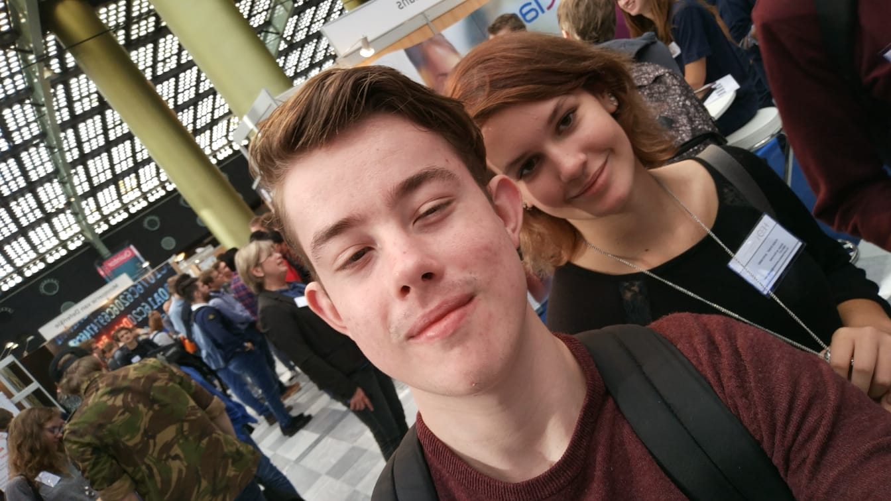
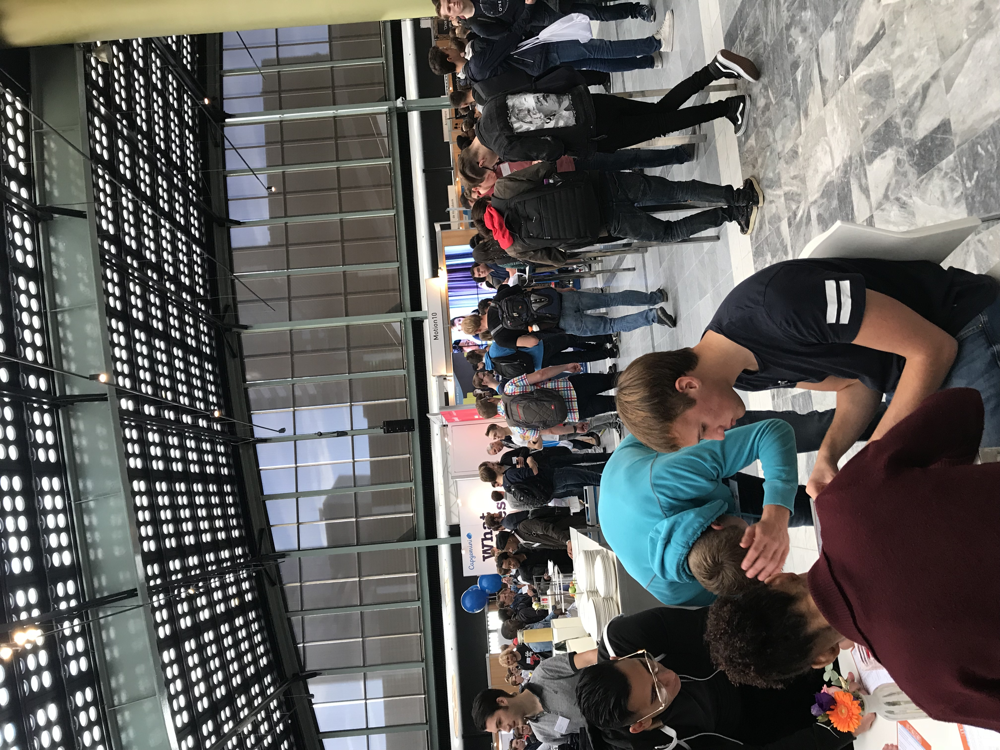

Het HBO-I Jobevent
Organisaties en de cultuur
- Dongit --> "Web experts. DongIT gebruikt kennis en ervaring uit webontwikkeling bij security audits en vvice versa."
- Quintor --> "Onze ambitie: Professionaliseren van software development."
- Secura --> "Security is in our DNA.
- Conclusion --> "De visie: Conclusion is anders dan andere bedrijven. Conclusion ziet kracht in het positieve van mensen en is de voedingsbodem voor specialisten met lef. Mensen die verder willen kijken dan de al betreden paden. Conclusion staat voor onbevangenheid, daadkracht, vertrouwen en transparantie In de zoektocht naar antwoorden op complexe vragen is Conclusion de partner. Op basis van wederzijds respect en in harmonie met de omgeving, zoekt het samen met hun opdrachtgevers naar oplossingen die hoger reiken dan de huidige standaard. De missie: People business is onze core business"
- ETTU --> Door het bundelen van specialistische technische kennis, change management vaardigheden en SaaS-oplossingen creëren wij voor onze klanten de moderne werkplek die succesvol in gebruik wordt genomen. Door goed werkgeverschap en voorop te lopen in Microsoft-ontwikkelingen zorgen wij voor een uitdagende werkomgeving voor onze medewerkers.

Functies binnen de organisaties
- Bij Dongit kun je kiezen uit de volgende vacatures:
- Senior PHP Developer
- Senior IT-Security -> Sepicalist/Pentester
- Junios Security Tester (Pentester)
- DevOps Engineer
- Junior/Medior PHP Developer
- Bij Quintor kun je kiezen uit de volgende vacatures:
- NET Developer
- Agile Informatieanalist
- Front-end Developer
- Java Developer
- Junior Agile Analist
- Scala Developer
- Young Professional Platform Engineer
- Young Professional Software Developer
- Bij Secura kun je kiezen uit de volgende vacatures:
- Supervisor - Commercial Lines Underwriting
- Intern - IT Service Desk
- Service Desk Analyst (Short Term Temporary)
- Video And Online Training Specialist
- Farm Agribusiness Underwriter
- Farm Agribusiness Underwriter (Remote)
- Conversion Team Member
- Ect.
- Bij Conclusion kun je kiezen uit de volgende vacatures:
- Medior Projectmanager
- Junior Intergratie Specialist
- Front-End Developer
- Sitecore Debeloper
- Medior Systeembeheerder
- .NET Developer
- Funcioneel Applicatiebeheer AFAS
- Ect.
- Bij ETTU kun je kiezen uit de volgende vacatures:
- Architect
- Ontwikkelaar
- Changemanager
